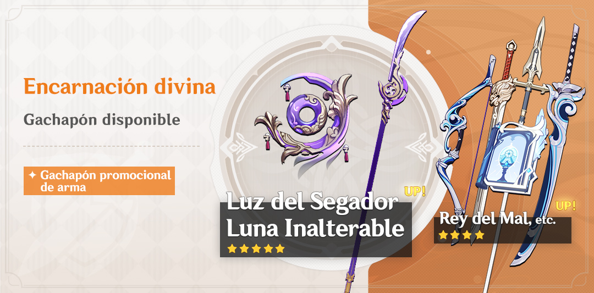

Noticias Destacadas
«Sueños Embriagadores»

¡El nuevo evento «Sueños embriagadores» estará disponible próximamente! Luka de Mondstadt
busca personas para participar en la Semana de entrenamiento para cantineros, que se dice que
es bien pagada si se deja satisfechos a los clientes...

El Pase de Batalla «En las tinieblas» tiene más misiones disponibles. Tras completarlas podrás
conseguir EXP PB.
Duracion
Fase de juego: del 10 de marzo 10:00 al 21 de marzo de 2022 03:59 (hora del servidor).
Misión «Sueños embriagadores:
epílogo»: del 21 de marzo 04:00 al 24 de marzo de 2022 03:59 (hora del servidor).
Requisitos de participacion
Haber alcanzado el Rango de Aventura 28 o superior.
Haber completado la misión de Arconte: Intermedio, Acto I «La grulla regresa con el viento».
Haber completado la misión legendaria de Eula: «Aphros Delos, Acto I: Las olas que no vuelven al mar».
*Durante el evento, para aceptar la misión «Aphros Delos, Acto I: Las olas que no vuelven al mar»
se necesita alcanzar el Rango de Aventura 28. No será necesario utilizar Llaves legendarias para desbloquearla.

Mini álbum de Genshin Impact - Una plácida luz celestial
¡Gachapón «Encarnación divina»! ¡Probabilidad de obtención de Luz del Segador (lanza) y Luna Inalterable (catalizador) aumentada!
Durante el evento, con el gachapón promocional «Encarnación divina», ¡podrás obtener más armas y personajes para fortalecer tu equipo!
〓Duración〓
2022/03/08 18:00:00-2022/03/29 14:59:59
〓Detalles〓
●Durante el evento, ¡la posibilidad de obtener las armas exclusivas de 5★ Luz del Segador (lanza) y Luna Inalterable (catalizador) será mucho mayor!
●Durante el evento, ¡la posibilidad de obtener las armas exclusivas de 4★ Rey del Mal (mandoble) y Luna de Mouun (arco), así como las armas de 4★ Rugido del León (espada ligera), Lanza de Favonius (lanza) y Memorias de Sacrificios (catalizador) será mucho mayor!
●Durante el evento, podrás utilizar Senda divina para conseguir las armas promocionales de 5★ Luz del Segador (lanza) o Luna Inalterable (catalizador). Para más información sobre el sistema "Senda divina", presiona en "Detalles" en la esquina inferior izquierda de la interfaz de gachapón.
※ Las armas exclusivas no serán añadidas al gachapón permanente «Pasión por viajar».
※ Para más información sobre los gachapones, presiona en "Detalles" en la esquina inferior izquierda de la interfaz de "Gachapón".